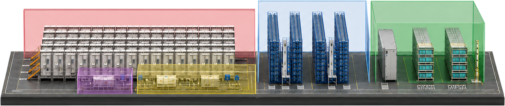

공정 프로세스 맵
- 에이프로는 이차전지 활성화(Formation) 공정 전체 설비의 자체 제작 기술을 보유하고 있으며, 활성화 공정에 필요한 9가지 설비를 직접 생산하여 국내외 고객사에 납품하고 있습니다.
- 배터리 셀 활성화 공정은 셀 제조의 마지막 단계로, 배터리의 성능과 품질을 최종적으로 결정하는 핵심 공정입니다.
- 에이프로는 정밀 충·방전 기술과 자동화 역량을 기반으로, 배터리 셀 활성화 공정 전반을 아우르는 통합 자동화 솔루션을 제공합니다.
- 각 공정에서 발생하는 전압, 전류, 온도 등의 데이터를 정밀하게 측정·관리하여 배터리 셀의 품질과 생산 안정성을 향상시킵니다.
- 01초기 충전
- 02노화
- 03방전
- 04반복 충방전
- 05용량 및 성능 검사
- 06불량 선별
- 07최종 외관 검사
